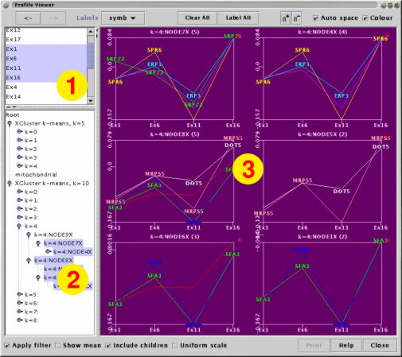

This plugin displays one or more groups of 'expression profiles'. An expression profiles is a line which represents how the expression value for a Spot changes across Measurements. A single group of hand picked Spots can be displayed, or groups can be generated from a cluster hierarchy.
The expression profiles are essentially the same visualisation as that given by the Web Plot. The difference with this plugin is that the grouping of Spots into Clusters can also be displayed.
In "Cluster" mode you can select one or more Clusters from a tree or use drag-and-drop to move Clusters from other parts of maxdView.
You can 'drill down' into a Cluster by clicking on the glyph drawn on the top-right on each graph.
In "Spot" mode you can select one or more Spots from an alphabetically spoted list of Names or Name Attributes. Again, drag-and-drop can be used to select Spots in the list. Dropping a Cluster onto the list will select all Spots in that Cluster (and it's descendants).

The plugin is split into three areas:
The Measurement selection area with which you select two or more Measurements to include in the profile.
The Cluster selection area with which you select one or more Clusters to draw profiles for.
The visualisation panel in which the profiles appear. There will be one graph for each selected Cluster. The name of the Cluster and the number of Spot profiles is shown above each graph.
When the Include children option is selected, each graph will include the Spots from the Cluster and all of it's children, otherwise just the Spots in the Cluster itself are displayed.
The Show mean option toggles between showing profiles for each Spot in the Cluster or calculating a mean profile for all Spots in the Cluster. When the mean profiles are displayed, error bars are included show the minimum and maximum values along the profile
The Apply filter option selects between showing all of the Spots in selected Clusters, or only showing the Spots which pass through the current filter(s).
The Uniform scale option determines whether all graphs are drawn to the same scale or whether each graph is allowed to optimise it's scale to the range of the data it is displaying.
The Cluster selection panel has a shortcut feature. Select a Cluster, then press a number key '1',..,'9' to expand the tree to the specified depth. Press '0' to collapse the branches of the selected Cluster.
You can use drag-and-drop to move Clusters to the Cluster selection panel and Measurement Names to the Measurement selection panel.
When the mouse pointer is rested over a profile for a moment, a tool-tip window appears containing an identification label. This label can be any of the Name or Name Attributes in the current data. The choice of which Name or Name Attribute to show is made via the drop-down menu in the control bar along the top of the window.
Click on a profile to add a name label to the plot. Click on the profile again to remove the label. The "Clear all" button removes all name labels that have been added to the plot. The "Label all" button adds labels to all Spot profiles which are currently displayed.
The size of the label font can be adjusted using the "a+" and "a-" buttons.
Drag-and-drop can be used to locate particular Spots in the plot. Drag one or more Spots from the main display and drop them into the HyperCube Plot window. This causes the name(s) to appear next to the dots on the plot. Dropping a Cluster onto the panel causes the names of all Spots in the cluster to be displayed.
The "AutoSpace" option attempts to improve the readability of the graphs by reducing the quantity of displayed labels. When this mode is enabled, labels will only be drawn if there is enough space for them. Note that when there is not a lot of space, or a lot of labels, this mode can lead to some Spots becoming unlabelled.
Spots which have been selected for labelling can also be displayed in colour to make them more visible. The "Colour" checkbox controls this feature.
You can 'drill down' into a Cluster by clicking on the glyph drawn in the top-right on each graph. (This glyph is the coloured shape that is associated with the Cluster via the Cluster Manager). Profiles for the Cluster and up to eight of it's children will be displayed. The Cluster that was drilled onto will be in the top-left corner.